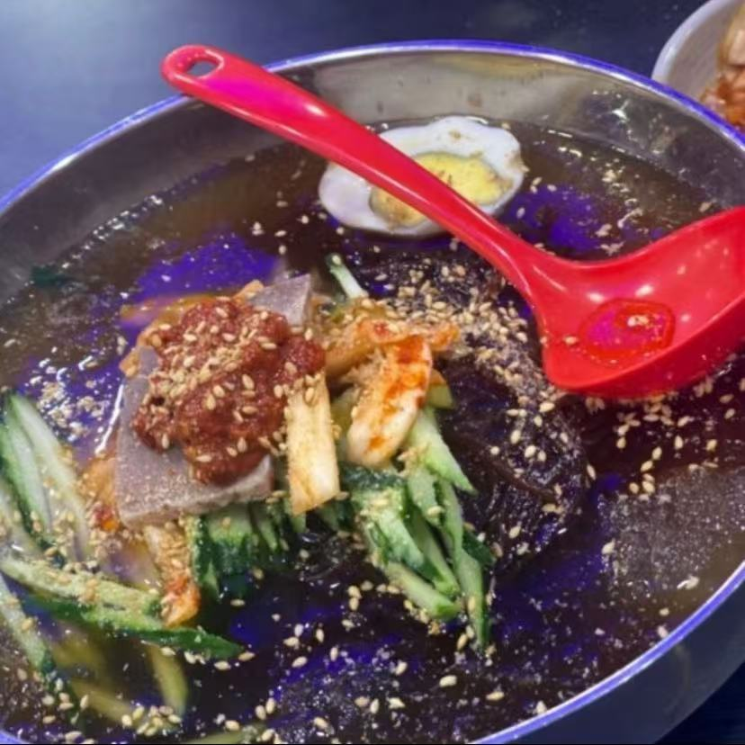
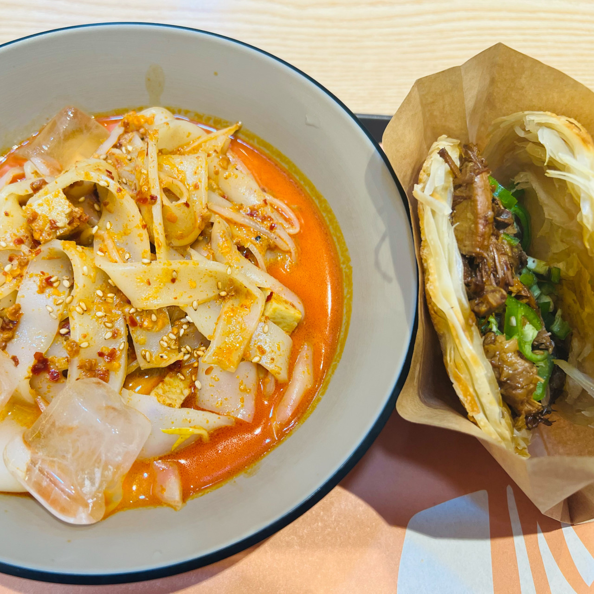
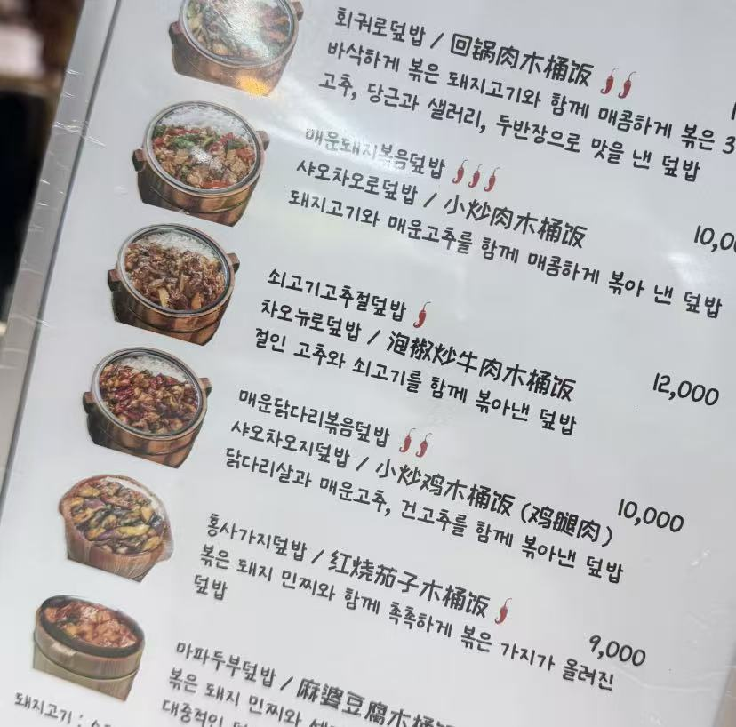

태산 양꼬치의 냉면
이 집의 냉면은 연변식의 냉면인데 중국에서도 상위 10% 이상으로 꼽힐 수 있을 정도 입니다.
위치: 부평구 장제로92번길 15

미스터용차이나버거 부평점의 량피
량피는 일종의 비빔면이라고 생각하시면 됩니다. 이 집은 건대에도 있는데 부평구에 있는것이 훨------씬 맛있습니다. 그만큼 량피는 같은 브랜드라도 만드는 사람에 따라 차이가 크게 납니다.
위치: 인천 부평구 부평문화로106번길 42 포레스톤 1층 109호

라우장사 후난요리(네이버 지도에 아직x)
이 집은 매운편입니다. 매운닭다리볶음 덮밥만 먹어 봤는데 제 중국의 대학의 식당과 비슷한 요리다는 느낌이 듭니다.
위치: 부평역 지하 1층